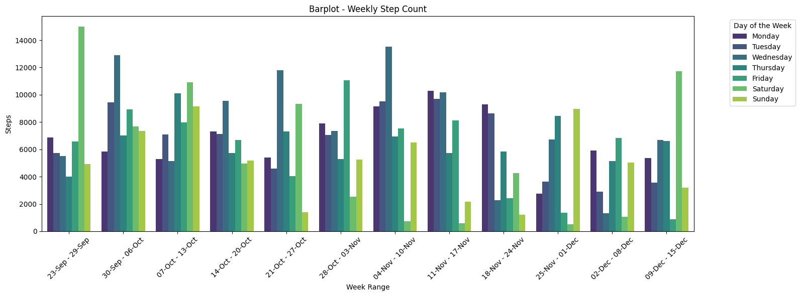
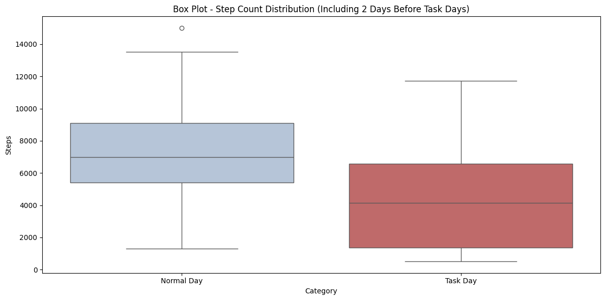
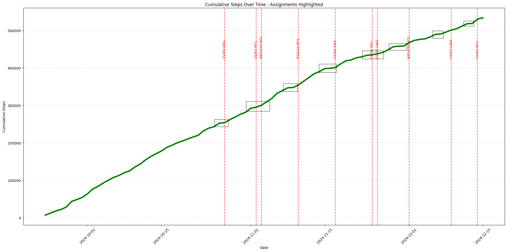
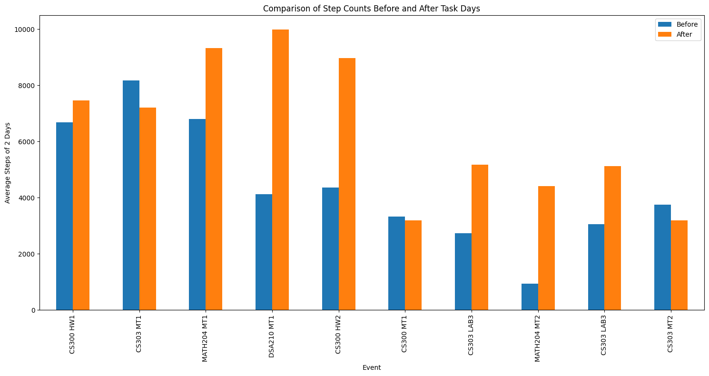
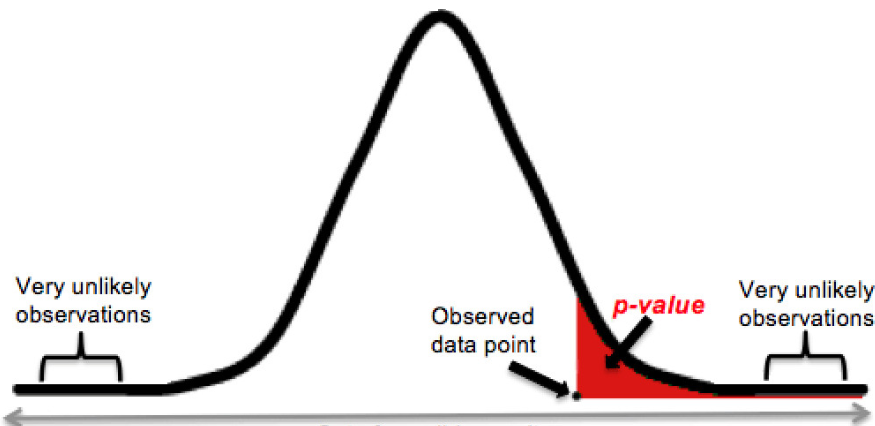
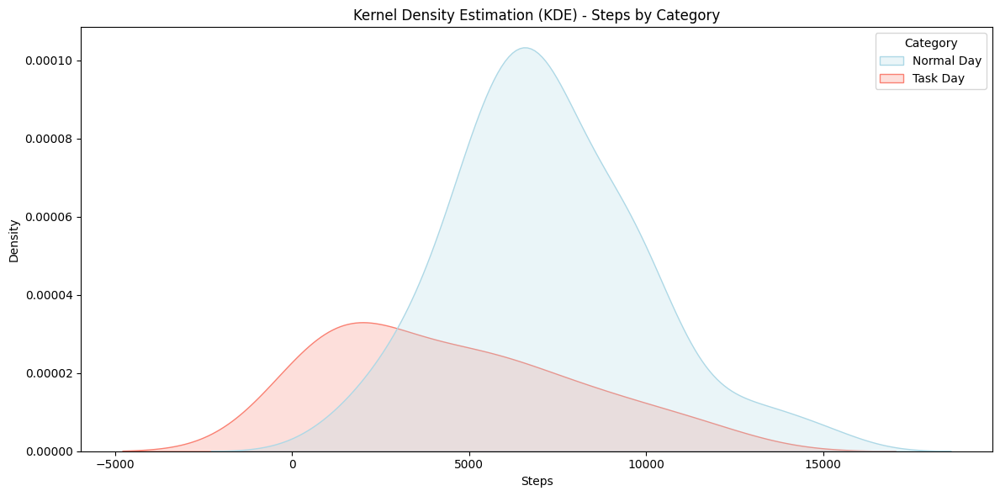

Doing so i clearly saw a pattern in the data
While this graph helped me see that my point might be true, I needed to explore the data further with
different graphs and visualizations to really understand the data and be confident in my conclusion.
Now it was clearer than ever to notice the decrease in my daily activity before and on the day of an assignment
I used a box plot to highlight the differences in activity levels between regular days and task days
The cumulative steps appeared more stable as an assignment date approached
This graph showed the difference in steps before and after assignment days, but it could have been better with some changes.
Null Hypothesis (H0): University assignments have no significant impact on daily activity levels.
Alternative Hypothesis (Ha): University assignments significantly impact daily activity levels.
If p value is smaller than 0.05 we can reject the null hypothesis
The KDE graph reveals that the average step count on normal days is significantly higher than on task days.
According to t-test the p-value is found to be apporixametly 0.0009643 and since this value is smaller than 0.05,
we can reject the Null Hypothesis
(Task steps include the previous 2 days from a task)
According to Mann-Whitney U Test the p-value is found to be apporixametly 0.0004865 and since this value is smaller than 0.05,
we can reject the Null Hypothesis according to this test too
(Task steps include the previous 2 days from a task)
According to Mann-Whitney U Test the p-value is found to be apporixametly 0.0004777 and since this value is smaller than 0.05,
we can reject the Null Hypothesis according to this test too
(Task steps include the previous 2 days from a task)
Since all the tests results in rejecting the Null Hypothesis we can say that: